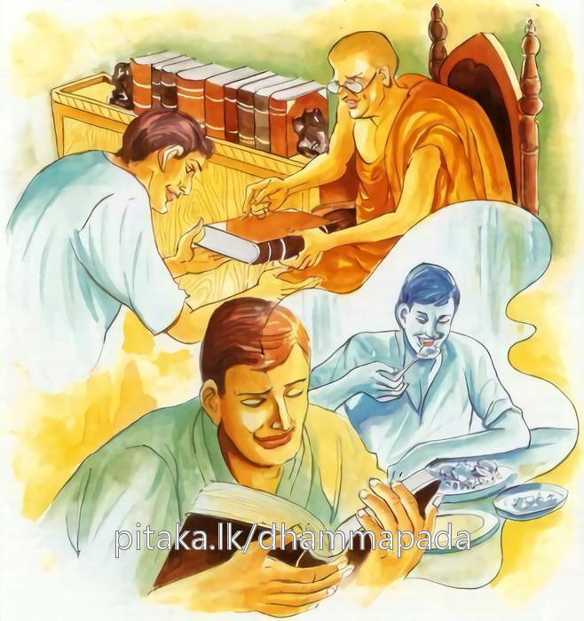

5-6 ගැහැණියක සොයා ගිය වුන් රහත්වීම
මෙම කතාව ධම්මපද අටුවාවෙන් ද කියවන්න.
මුහුත්තමපි චෙ විඤ්ඤූ පණ්ඩිතං පයිරුපාසති
ඛිප්පං ධම්මං විජානාති ජිව්හා සූපරසං යථා.
නුවණැත්තේ මොහොතක් නමුදු බුද්ධාදි ප්රාඥයන් සෙව්නේ ද, හේ වහා (පර්ය්යාප්ති ප්රතිවේධ) ධර්මය දැන ගනී. සූපව්යංජනයෙහි රස දැන ගන්නා දිව මෙනි.

එක්තරා දවසෙක දනවු සැරි සරන බුදුරජානන් වහන්සේ උරුවේලාවට වඩින ගමනේ මහමගින් මඳක් ඈතින් පිහිටි කපුහේනකට ගොස් ගසක් මුල වැඩහුන් සේක. එකල පාඨෙය්යක වාසී වූ පුරුෂයෝ තිස් දෙනෙක් සිය බිරිඳුන් සමහ කෑම් පීම් ද ගෙණ එහි ගොස් කෙළිදෙළෙන් ඔබිනොබ හැසිරෙන්නට වූහ. මොවුන් අතර එකක්හට බිරිඳක් නො වූ ය. එහෙයින් ඔහු තමන් පිණිස වෙසඟනක් ගෙන ගියේ ය. ඈ මොවුන් ගේ ප්රමාදයක් දැක කූඩාරම් තුළට වැදී එහි තිබූ සියලු දේ ගෙණ සැඟවී ගියා ය. එකල මොවුහු ඇය සොයමින් කපු හේනෙහි හැසිරෙන්නේ, ගස මුල වැඩහුන් බුදුරජුන් දැක උන්වහන්සේ කරා ගොස් ‘ස්වාමීනි! ගෑණියක හේම මේ පැත්තෙහි යනු දුටුවහු දැ’ යි ඇසූහ. එවිට ‘ගෑණු සොයමින් ගෑණු පසේ යෑමෙන් ඇති පලය කිමැ’ යි උන්වහන්සේ විචාළ සේක. ඔවුහු සියලු තොරතුරු කියා පෑහ. එතැන දී ‘ගෑණියක සෙවීමත් තමන් සෙවීමත් දෙකින් වඩා සුදුසු වඩා වටින්නේ කා සෙවීම දැ’ යි ඇසූ කල්හි ‘තමන් සෙවීම ය’ යි ඔවුහු කීහ. එවිට බුදුරජානන් වහන්සේ ඔවුන් එහි ම වාඩි කරවා ගෙණ ආනුපුබ්බීකථා නම් ධර්මදේශනාව කළ සේක. අවසානයෙහි සියල්ලෝ ම, එහි භික්ෂුභාවයෙන් පැවිදි ව සෘද්ධියෙන් ලත් පා සිවුරු ඇති ව ධූතඞ්ග සමාදන් ව වසනුවෝ, නැවැත පසු දවසෙක බුදුරජුන් වෙත එළඹියෝ, ‘අනමතග්ග’ සුත්රය අසා, හුන් අසුන්වලදී ම රහත් බවට පැමිණියෝ ය. එකල අනික් භික්ෂූන් වහන්සේලා ‘මහා පුදුමයෙකි, මොවුන් වහා ධර්මය දැන ගන්නා ලද්දේ ය, සමහර දෙනාට රහත් වන්නට අවුරුදු ගණන් ගත වේ ය’ යි ධර්මශාලාවෙහි රැස් ව හිඳ කතා කරන්නට වූහ. එහි වැඩි බුදුරජානන් වහන්සේ මේ කතාව අසා ‘මහණෙනි! මේ නමලා වහා දහම් අවබෝධ කළෝ අද පමණක් නො වෙති, පෙරත් අන් අත්බවෙක ධුර්තයෝ ව ඉපද සිටියෝ රා බී සල්ලාල කම් කරමින් තුණ්ඩිල නම් ඌරකු කියූ බණක් අසා, ඇසූ හැටියේ ම සියලු වැරදි අත්හැර දමා පන්සිල් සමාදන් වූහ. ඒ එදා ගත් පන්සිල් අනුහසින් අද මේ හුන් අසුන්වලදී ම රහත් වූහ’ යි වදාරා මේ ධර්ම දේශනාව කළ සේක:-
මුහුත්තමපි චෙ විඤ්ඤූ පණ්ඩිතං පයිරුපාසති,
ඛිප්පං ධම්මං විජානාති ජිව්හා සුපරසං යථාති.
ඉදින් නුවණැත්තේ මොහොතක් නමුත් නුවණැත්තකු සේවනය කෙරේ නම්, ඔහු වහා ධර්මය දැන ගණියි. වහා ම ව්යඤ්ජන රසය දැන ගන්නා දිව මෙනි.
මුහුත්තං = මොහොතක්.
දස අසුරුසණක් ක්ෂණයෙකි. දශ ක්ෂණයෙක් ලයයෙකි. දශ ලයයෙක් ක්ෂණලයයෙකි. දශක්ෂණලයයෙක් මොහොතෙකි.
ඛණො (දසච්ඡරා කාලො) (ඛණා දස) ලයො භවෙ (ලයා දස) ක්ඛණලයො, මුහුත්තො (තො සියා දස)’ යි කොෂාගත ය.
විඤඤු = පණ්ඩිත තෙමේ.
විශේෂයෙන් දන්නා ස්වභාවය ඇත්තේ විඤඤූ, නම් වේ.
‘විසෙසං ජානාති සීලෙනාති = විඤ්ඤූ’ යනු එහි විදැහීම ය.
ඛිප්පං = වහා.
ධම්මං විජානාති = ධර්මය දනි යි.
ජිවහා සූපරසං යථා = ව්යඤ්ජන රස දැන ගන්නා දිව මෙනි.
විඥපුරුෂ තෙමේ මොහොතක් නමුත් නුවණැත්තකු සේවනය කරමින් ඔහු වෙතින් උගත යුත්ත උගන්නේ, ඇසිය යුත්ත අසන්නේ වහා ම ධර්මය දැන ගණි යි. ඉන් පසු කමටහන් කියවා ගෙණ පිළිවෙතෙහි යෙදෙන්නේ, ව්යායාම් කරන්නේ, නො නට ජිවහා ප්රසාදය ඇත්තෙක්, රස දැන ගන්නා පිණිස දිවග තබා ම ඒ ඒ ආහාර පානාදියෙහි ලුණු ඇඹුල් ඈ රස යම් සේ දැන ගණී ද, එසේ වහා ම ලෝකෝත්තර ධර්මය දැන ගණි යි.
ධර්මදේශනාවගේ අවසානයෙහි බොහෝ භික්ෂූන් වහන්සේලා රහත් බවට පැමිණියෝ ය.
පාඨෙය්යකභික්ෂු වස්තුව නිමි.